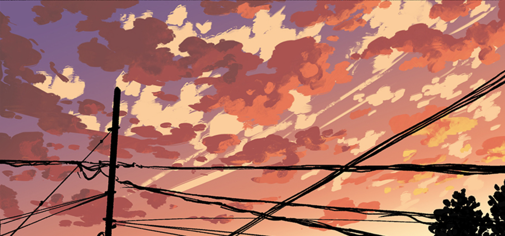

Chill out until its time

After hanging out for some time, the group starts walking towards the HQ and after a while, they arrive
> Arrive at HQGo Back

After hanging out for some time, the group starts walking towards the HQ and after a while, they arrive
> Arrive at HQ